Last updated: 2024-11-01
Checks: 7 0
Knit directory:
2021_MPSIIIBvQ96-RNAseq-7dpfLarve/
This reproducible R Markdown analysis was created with workflowr (version 1.7.1). The Checks tab describes the reproducibility checks that were applied when the results were created. The Past versions tab lists the development history.
Great! Since the R Markdown file has been committed to the Git repository, you know the exact version of the code that produced these results.
Great job! The global environment was empty. Objects defined in the global environment can affect the analysis in your R Markdown file in unknown ways. For reproduciblity it’s best to always run the code in an empty environment.
The command set.seed(20211120) was run prior to running
the code in the R Markdown file. Setting a seed ensures that any results
that rely on randomness, e.g. subsampling or permutations, are
reproducible.
Great job! Recording the operating system, R version, and package versions is critical for reproducibility.
Nice! There were no cached chunks for this analysis, so you can be confident that you successfully produced the results during this run.
Great job! Using relative paths to the files within your workflowr project makes it easier to run your code on other machines.
Great! You are using Git for version control. Tracking code development and connecting the code version to the results is critical for reproducibility.
The results in this page were generated with repository version 7bb9ce6. See the Past versions tab to see a history of the changes made to the R Markdown and HTML files.
Note that you need to be careful to ensure that all relevant files for
the analysis have been committed to Git prior to generating the results
(you can use wflow_publish or
wflow_git_commit). workflowr only checks the R Markdown
file, but you know if there are other scripts or data files that it
depends on. Below is the status of the Git repository when the results
were generated:
Ignored files:
Ignored: .DS_Store
Ignored: .RData
Ignored: .Rapp.history
Ignored: .Rhistory
Ignored: .Rproj.user/
Ignored: analysis/.DS_Store
Ignored: code/.DS_Store
Ignored: code/6mBrain_RNAseq_genoSex.rmd
Ignored: code/6mBrain_fems.rmd
Ignored: code/HS.R
Ignored: code/about.Rmd
Ignored: code/analysis.Rmd
Ignored: code/analysis_final.rmd
Ignored: code/analysis_final_v2.rmd
Ignored: code/checkGenotypes.rmd
Ignored: code/explorationRUV.Rmd
Ignored: code/genotypeCheck.Rmd
Ignored: code/license.Rmd
Ignored: code/nhi6mdata.rmd
Ignored: code/plots4pub2.rmd
Ignored: code/plots4pub_RNAseq_afterreview1.R
Ignored: code/wgcna.rmd
Ignored: data/.DS_Store
Ignored: data/Nhi_data/.DS_Store
Ignored: data/R_objects/.DS_Store
Ignored: data/R_objects/larvae/.DS_Store
Ignored: data/adult_brain/.DS_Store
Ignored: data/adult_brain/05_featureCounts/.DS_Store
Ignored: data/adult_brain/fastqc_raw/.DS_Store
Ignored: data/gene_sets/.DS_Store
Ignored: data/larvae/.DS_Store
Ignored: data/larvae/fastqc_align/.DS_Store
Ignored: data/larvae/fastqc_align_dedup/.DS_Store
Ignored: data/larvae/fastqc_raw/.DS_Store
Ignored: data/larvae/fastqc_trim/.DS_Store
Ignored: data/larvae/featureCounts/.DS_Store
Ignored: data/larvae/meta/.DS_Store
Ignored: data/larvae/starAlignLog/.DS_Store
Ignored: output/.DS_Store
Ignored: output/plots/
Ignored: output/plots4poster/.DS_Store
Ignored: output/plots4pub/
Untracked files:
Untracked: Rplot01.pdf
Untracked: Rplot02.png
Untracked: data/R_objects/adult_brain/HMPKEGG_6m_brain_genosex_CQN.rds
Untracked: data/R_objects/adult_brain/HMP_ire_6m_brain_genosex_CQN.rds
Untracked: data/R_objects/adult_brain/cqn_logCPM_6m_brain.rds
Untracked: data/R_objects/adult_brain/dge_6m_brain_cqn.rds
Untracked: data/R_objects/adult_brain/fry_cell_6m_brain_genosex_CQN.rds
Untracked: data/R_objects/adult_brain/fry_cell_RNAseq.rds
Untracked: data/R_objects/adult_brain/goseqtibbles_6m_brain_genosex_CQN.rds
Untracked: data/R_objects/adult_brain/hmp.kegg.rna.rds
Untracked: data/R_objects/adult_brain/toptablescqn_bysex.rds
Untracked: data/allLLIDs.rds
Untracked: data/ensembl_zebrafish.rds
Untracked: data/proteomics/
Untracked: data/with_go_evidence.rds
Untracked: dre00020.pathview.multi.png
Untracked: dre00020.png
Untracked: dre00020.xml
Untracked: hsa04650.EOfADproteomes.multi.png
Untracked: hsa04650.MPSIIIBproteomes.multi.png
Untracked: hsa04650.png
Untracked: hsa04650.xml
Untracked: hsa04666.EOfADproteomes.multi.png
Untracked: hsa04666.MPSIIIBproteomes.multi.png
Untracked: hsa04666.png
Untracked: hsa04666.xml
Untracked: larvae dre00020.pathview.multi.png
Untracked: output/DE_proteins_for_string/
Untracked: output/GOenrichment_enrichmentTable.csv
Untracked: output/plots4RADposter/
Untracked: output/plots4kim/
Untracked: output/plots4pub2/
Untracked: output/plots4pub3/
Untracked: output/spreadsheets/RNAseqlarvae_celltypeFry.xlsx
Untracked: output/spreadsheets/RNAseqlarvae_hmpoutputs.xlsx
Untracked: output/spreadsheets/geneset_RNAseq_v2.xlsx
Untracked: output/spreadsheets/goseq_RNAseq_v2.xlsx
Untracked: output/spreadsheets/limma_proteomics_6mbrain.xlsx
Untracked: output/spreadsheets/proteomics_6mbrain_hmpoutputs.xlsx
Untracked: output/spreadsheets/toptables_RNAseq_v2.xlsx
Untracked: output/spreadsheets/~$toptables_RNAseq_v2.xlsx
Untracked: temp.png
Unstaged changes:
Modified: .gitignore
Deleted: analysis/6mBrain_fems.rmd
Deleted: analysis/HS.R
Deleted: analysis/about.Rmd
Deleted: analysis/analysis.Rmd
Deleted: analysis/analysis_adultbrain.knit.md
Deleted: analysis/analysis_final.rmd
Deleted: analysis/checkGenotypes.rmd
Deleted: analysis/explorationRUV.Rmd
Deleted: analysis/genotypeCheck.Rmd
Deleted: analysis/license.Rmd
Deleted: analysis/nhi6mdata.rmd
Deleted: analysis/plots4pub2.rmd
Modified: data/R_objects/adult_brain/dge.rds
Modified: data/R_objects/adult_brain/hmp_ire.rds
Modified: data/R_objects/adult_brain/logcpm.rds
Modified: data/R_objects/larvae/celltype_larvae.rds
Modified: data/R_objects/larvae/dge.rds
Modified: data/R_objects/larvae/hmp_ire.rds
Modified: data/R_objects/larvae/hmp_kegg.rds
Modified: data/R_objects/larvae/logcpm.rds
Modified: data/R_objects/larvae/toptablescqn.rds
Modified: data/adult_brain/karissas_metadata.xlsx
Modified: output/spreadsheets/toptables_cqn.xlsx
Note that any generated files, e.g. HTML, png, CSS, etc., are not included in this status report because it is ok for generated content to have uncommitted changes.
These are the previous versions of the repository in which changes were
made to the R Markdown (analysis/analysis_larvae.Rmd) and
HTML (docs/analysis_larvae.html) files. If you’ve
configured a remote Git repository (see ?wflow_git_remote),
click on the hyperlinks in the table below to view the files as they
were in that past version.
| File | Version | Author | Date | Message |
|---|---|---|---|---|
| Rmd | 7bb9ce6 | Karissa Barthelson | 2024-11-01 | wflow_publish("analysis/*") |
library(tidyverse)
library(magrittr)
library(readxl)
library(ngsReports)
library(AnnotationHub)
library(msigdbr)
library(pander)
library(scales)
library(pheatmap)
library(ggpubr)
library(ggrepel)
library(ggfortify)
library(ggforce)
library(RColorBrewer)
library(colorspace)
library(UpSetR)
library(edgeR)
library(goseq)
library(fgsea)
library(cqn)
library(harmonicmeanp)
library(ssizeRNA)
library(variancePartition)
theme_set(theme_bw())ah <- AnnotationHub() %>%
subset(species == "Danio rerio") %>%
subset(rdataclass == "EnsDb")
ensDb <- ah[["AH83189"]] # for release 101, latest version in Ah
grTrans <- transcripts(ensDb)
trLengths <- exonsBy(ensDb, "tx") %>%
width() %>%
vapply(sum, integer(1))
mcols(grTrans)$length <- trLengths[names(grTrans)]
gcGene <- grTrans %>%
mcols() %>%
as.data.frame() %>%
dplyr::select(gene_id, tx_id, gc_content, length) %>%
as_tibble() %>%
group_by(gene_id) %>%
summarise(
gc_content = sum(gc_content*length) / sum(length),
length = ceiling(median(length))
)
grGenes <- genes(ensDb)
mcols(grGenes) %<>%
as.data.frame() %>%
left_join(gcGene) %>%
as.data.frame() %>%
DataFrame()# read in metadata and cleanup column names and types.
meta <- read_excel("data/larvae/meta/naglu_v_Q96_larvae_metadata.xlsx", sheet = 3) %>%
na.omit() %>%
left_join(read_excel("data/larvae/meta/naglu_v_Q96_larvae_metadata.xlsx", sheet = 5) %>%
mutate(temp1 = str_split(temp, pattern = " ")) %>%
mutate(ULN = lapply(temp1, function(x){
x %>%
.[1]
}),
sample_name = lapply(temp1, function(x){
x %>%
.[2]
}),
RIN = lapply(temp1, function(x){
x %>%
.[4]
})
) %>%
unnest() %>%
dplyr::select(ULN, sample_name, RIN) %>%
na.omit() %>%
unique
) %>%
mutate(Genotype = case_when(
`naglu genotype` == "wt" & `psen1 genotype` == "wt" ~ "wt",
`naglu genotype` == "A603fs/A603fs" & `psen1 genotype` == "wt" ~ "MPSIIIB",
`naglu genotype` == "wt" & `psen1 genotype` == "Q96_K97del/+" ~ "EOfADlike",
) %>%
factor(levels = c("wt", "MPSIIIB", "EOfADlike")),
sample = paste0(Genotype, "_", ULN),
RIN = as.numeric(RIN))
# read in the output of featurecounts.
featureCounts <-
read_delim("data/larvae/featureCounts/counts.out", delim = "\t", skip = 1) %>%
set_names(basename(names(.))) %>%
set_names(names(.) %>% str_remove(pattern = "_S1_merged.Aligned.sortedByCoord.dedup.out.bam")) %>%
as_tibble() %>%
dplyr::select(-c(Chr, Start, End, Length, Strand)) %>%
gather(key = "ULN", value = "counts", starts_with("21")) %>%
left_join(meta) %>%
dplyr::select(Geneid, counts, sample) %>%
spread(key = "sample", value = "counts") %>%
column_to_rownames("Geneid")
# write out the cleaned up output for uploading to GEO
#write_csv(rownames_to_column(featureCounts, "gene_id"), "output/GEOcounts.out")Genes which are lowly expressed are considered uninformative for de analysis. Here, we set the threshold to be a min CPM of 0.5 (following the 10/min lib size rule proposed by gordon smyth). The effect of filtering is found below
a <- featureCounts %>%
cpm(log = TRUE) %>%
as.data.frame() %>%
pivot_longer(
cols = everything(),
names_to = "sample",
values_to = "logCPM"
) %>%
split(f = .$sample) %>%
lapply(function(x){
d <- density(x$logCPM)
tibble(
sample = unique(x$sample),
x = d$x,
y = d$y
)
}) %>%
bind_rows() %>%
left_join(meta) %>%
ggplot(aes(x, y, colour = Genotype, group = sample)) +
geom_line() +
labs(
x = "logCPM",
y = "Density",
colour = "Genotype"
)+
ggtitle("Before filtering") +
theme_bw()
b <- featureCounts %>%
.[rowSums(cpm(.) >= 0.5) >= 8,] %>%
cpm(log = TRUE) %>%
as.data.frame() %>%
pivot_longer(
cols = everything(),
names_to = "sample",
values_to = "logCPM"
) %>%
split(f = .$sample) %>%
lapply(function(x){
d <- density(x$logCPM)
tibble(
sample = unique(x$sample),
x = d$x,
y = d$y
)
}) %>%
bind_rows() %>%
left_join(meta) %>%
ggplot(aes(x, y, colour = Genotype, group = sample)) +
geom_line() +
labs(
x = "logCPM",
y = "Density",
colour = "Genotype"
)+
ggtitle("After filtering")
ggarrange(a, b, common.legend = TRUE)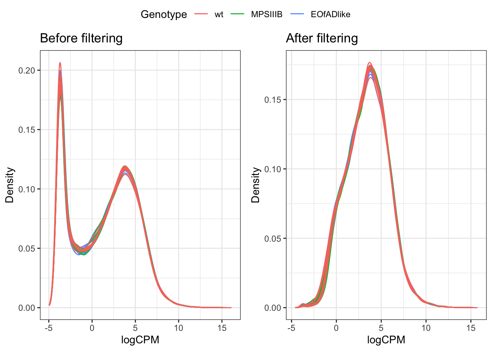
x <- featureCounts %>%
as.matrix() %>%
.[rowSums(cpm(.) >= 0.5) >= 8,] %>%
DGEList(
samples = tibble(sample = colnames(.)) %>%
left_join(meta),
genes = grGenes[rownames(.)] %>%
as.data.frame() %>%
dplyr::select(
chromosome = seqnames, start, end,
gene_id, gene_name, gene_biotype, description, entrezid
) %>%
left_join(gcGene) %>%
as_tibble()
) %>%
calcNormFactors()I fors want to explore the overall similarity between samples by PCA. No distinct clusters of samples are observed by genotype
x$counts %>%
cpm(log=TRUE) %>%
t() %>%
prcomp() %>%
autoplot(data = tibble(sample = rownames(.$x)) %>%
left_join(x$samples),
colour = "Genotype",
size = 6
) +
theme_bw() +
theme(aspect.ratio = 1) +
scale_color_discrete_qualitative(palette = "Dark 3")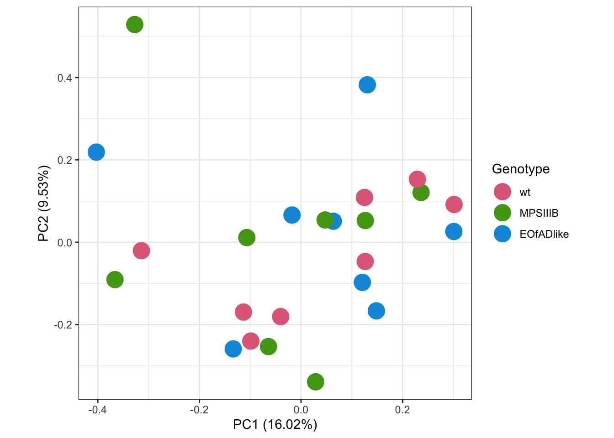
# ggsave("output/plots/PCAblue.png", width = 10, height = 10, units = "cm", dpi = 300, scale = 1.25)x$counts %>%
cpm(log=TRUE) %>%
t() %>%
prcomp() %>%
autoplot(data = tibble(sample = rownames(.$x)) %>%
left_join(x$samples),
colour = "RIN",
size = 6
) +
theme_bw() +
theme(aspect.ratio = 1) +
labs(colour = "RIN") +
scale_color_viridis_c(end = 0.9)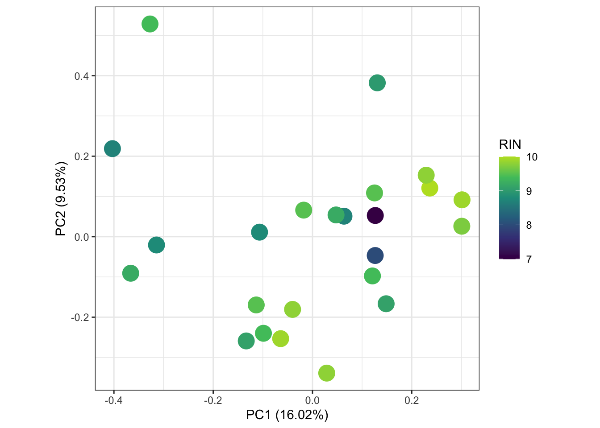
This is in the checkGenotypes.rmd file. All fish carry
the genotypes indicated from the PCR genotyping.
design <- model.matrix(~Genotype, data = x$samples) %>%
set_colnames(gsub(colnames(.), pattern = "Genotype", replacement = ""))
fit_1 <- x %>%
estimateDisp(design) %>%
glmFit(design)# Call the toptable
toptable_1 <- design %>% colnames() %>% .[2:3] %>%
sapply(function(x){
glmLRT(fit_1, coef = x) %>%
topTags(n = Inf) %>%
.[["table"]] %>%
as_tibble() %>%
arrange(PValue) %>%
mutate(
coef = x,
DE = FDR < 0.05
) %>%
dplyr::select(
gene_name, logFC, logCPM, PValue, FDR, DE, everything()
)
}, simplify = FALSE)These plots are zoomed in between -10 and 10 on the y-axisfor vis purposes. the blue lines of best fit are a bit wonky, meaning there are some biases here for %GC and Length. Therefore, conditional quantile normailsation is required.
ggarrange(
toptable_1 %>%
bind_rows() %>%
mutate(rankstat = sign(logFC)*-log10(PValue)) %>%
ggplot(aes(x = length, y = rankstat)) +
geom_point(
aes(colour = DE),
alpha = 0.5
) +
geom_smooth(se = FALSE, method = "gam") +
facet_grid(rows = vars(coef)) +
theme_bw() +
theme(legend.position = "none") +
scale_color_manual(values = c("grey50", "red")) +
scale_x_log10()+
labs(x = "Average transcript length per gene",
colour = "Differentially expressed?",
y = "sign(logFC)*-log10(PValue)") +
coord_cartesian(ylim = c(-5, 5)),
toptable_1 %>%
bind_rows() %>%
mutate(rankstat = sign(logFC)*-log10(PValue)) %>%
ggplot(aes(x = gc_content, y = rankstat)) +
geom_point(
aes(colour = DE),
alpha = 0.5
) +
geom_smooth(se = FALSE, method = "gam") +
facet_grid(rows = vars(coef)) +
theme_bw() +
theme(legend.position = "none") +
scale_color_manual(values = c("grey50", "red")) +
coord_cartesian(ylim = c(-5,5)) +
labs(x = "Weighted average GC content (%) per gene",
colour = "Differentially expressed?",
y = "sign(logFC)*-log10(PValue)"),
common.legend = TRUE,
labels = "AUTO"
) 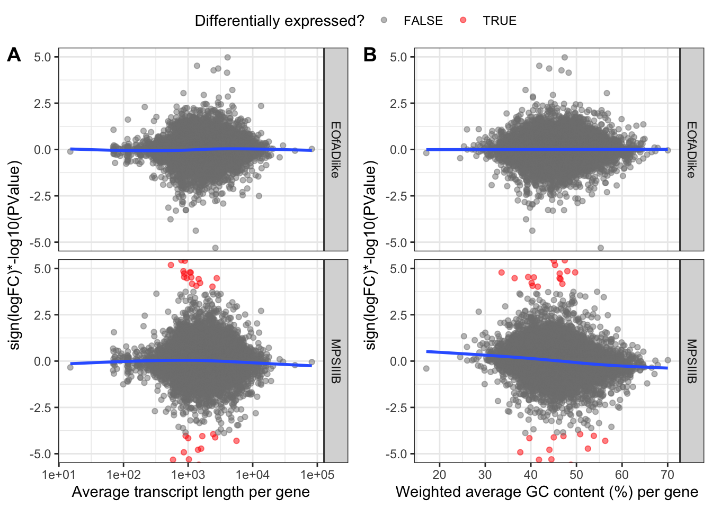 # CQN
A little bit of bias is obsevred for %GC content and gene length, so
will apply the cqn correction to adjust for this.
cqn <-
x %>%
with(
cqn(
counts = counts,
x = genes$gc_content,
lengths = genes$length,
sizeFactors = samples$lib.size
)
)
logCPM <- cqn$y + cqn$offsetpar(mfrow = c(1, 2))
cqnplot(cqn, n = 1, xlab = "GC Content")
cqnplot(cqn, n = 2, xlab = "Length")Model fits for GC content and gene length under the CQN model. Variability is clearly visible at either end
par(mfrow = c(1, 1))PCA analysis was repeated. No significant improvement of cliustering of samples by genotype is observed
ggarrange(
cpm(x, log = T) %>%
t() %>%
prcomp() %>%
autoplot(data = tibble(sample = rownames(.$x)) %>%
left_join(x$samples),
colour = "Genotype",
size = 4
) +
scale_color_discrete_qualitative(palette = "Dark 3") +
theme(aspect.ratio = 1) +
ggtitle("Before CQN"),
logCPM %>%
t() %>%
prcomp() %>%
autoplot(data = tibble(sample = rownames(.$x)) %>%
left_join(x$samples),
colour = "Genotype",
size = 4
) +
scale_color_discrete_qualitative(palette = "Dark 3") +
theme(aspect.ratio = 1) +
ggtitle("After CQN"),
common.legend = T,
labels = "AUTO"
)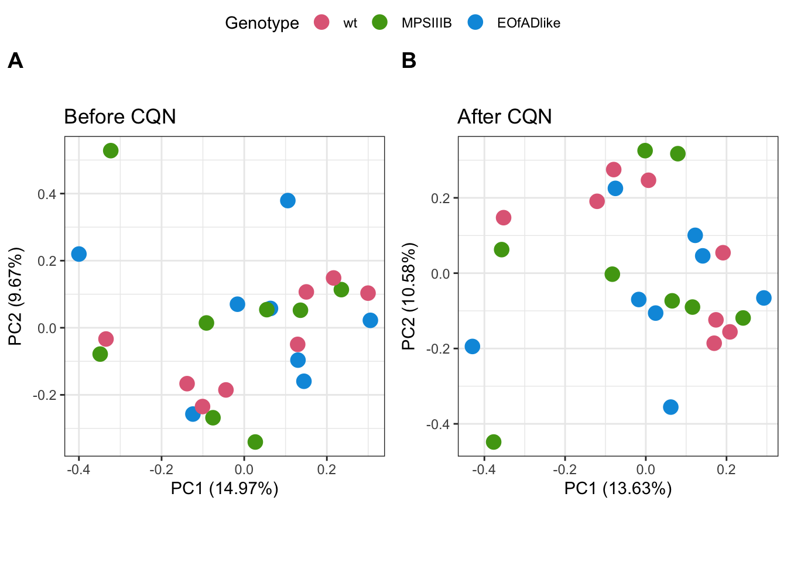
The DE analysis was then repeated, this time including the offset
generated by cqn in the model.
# Add the offset to the dge object
x$offset <- cqn$glm.offset
# fit the glm
fit_cqn <- x %>%
estimateDisp(design) %>%
glmFit(design)
toptables_cqn <- design %>% colnames() %>% .[2:3] %>%
sapply(function(x){
glmLRT(fit_cqn, coef = x) %>%
topTags(n = Inf) %>%
.[["table"]] %>%
as_tibble() %>%
arrange(PValue) %>%
mutate(
coef = x,
DE = FDR < 0.05
) %>%
dplyr::select(
gene_name, logFC, logCPM, PValue, FDR, DE, everything()
)
}, simplify = FALSE)ggarrange(
toptables_cqn %>%
bind_rows() %>%
mutate(rankstat = sign(logFC)*-log10(PValue)) %>%
ggplot(aes(x = length, y = rankstat)) +
geom_point(
aes(colour = DE),
alpha = 0.5
) +
geom_smooth(se = FALSE, method = "gam") +
facet_grid(rows = vars(coef)) +
theme_bw() +
theme(legend.position = "none") +
scale_color_manual(values = c("grey50", "red")) +
scale_x_log10()+
labs(x = "Average transcript length per gene",
colour = "Differentially expressed?",
y = "sign(logFC)*-log10(PValue)") +
coord_cartesian(ylim = c(-5, 5)),
toptables_cqn %>%
bind_rows() %>%
mutate(rankstat = sign(logFC)*-log10(PValue)) %>%
ggplot(aes(x = gc_content, y = rankstat)) +
geom_point(
aes(colour = DE),
alpha = 0.5
) +
geom_smooth(se = FALSE, method = "gam") +
facet_grid(rows = vars(coef)) +
theme_bw() +
theme(legend.position = "none") +
scale_color_manual(values = c("grey50", "red")) +
coord_cartesian(ylim = c(-5,5)) +
labs(x = "Weighted average GC content (%) per gene",
colour = "Differentially expressed?",
y = "sign(logFC)*-log10(PValue)"),
common.legend = TRUE,
labels = "AUTO"
) 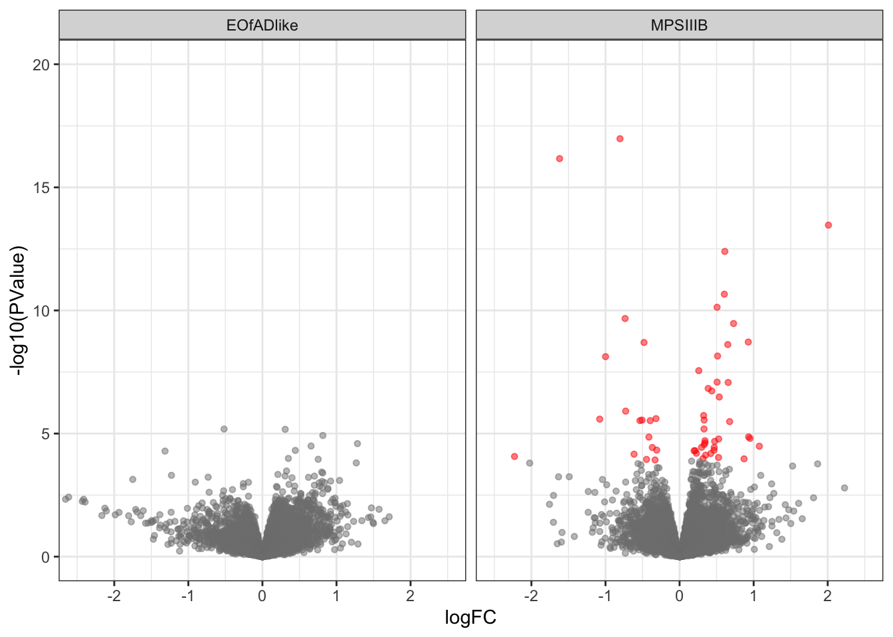
I now will perform some gene set enrichment analyses on MSIGDB gene sets.
KEGG <- msigdbr("Danio rerio", category = "C2", subcategory = "CP:KEGG") %>%
left_join(x$genes, by = c("gene_symbol" = "gene_name")) %>%
dplyr::filter(gene_id %in% rownames(x)) %>%
distinct(gs_name, gene_id, .keep_all = TRUE) %>%
split(f = .$gs_name) %>%
lapply(extract2, "gene_id")
# GO Terms
goSummaries <- url("https://uofabioinformaticshub.github.io/summaries2GO/data/goSummaries.RDS") %>%
readRDS() %>%
mutate(
Term = Term(id),
gs_name = Term %>% str_to_upper() %>% str_replace_all("[ -]", "_"),
gs_name = paste0("GO_", gs_name)
)
minPath <- 3
GO <-
msigdbr("Danio rerio", category = "C5") %>%
dplyr::filter(grepl(gs_name, pattern = "^GO")) %>%
left_join(x$genes, by = c("gene_symbol" = "gene_name")) %>%
dplyr::filter(gene_id %in% rownames(x)) %>%
mutate(gs_name = str_replace(gs_name, pattern = "GOBP_", replacement = "GO_")) %>%
mutate(gs_name = str_replace(gs_name, pattern = "GOMF_", replacement = "GO_")) %>%
mutate(gs_name = str_replace(gs_name, pattern = "GOCC_", replacement = "GO_")) %>%
left_join(goSummaries) %>%
dplyr::filter(shortest_path >= minPath) %>%
distinct(gs_name, gene_id, .keep_all = TRUE) %>%
split(f = .$gs_name) %>%
lapply(extract2, "gene_id")
sizes_GO <- GO %>%
lapply(length) %>%
unlist %>%
as.data.frame() %>%
set_colnames( "n_genes") %>%
rownames_to_column("gs")
# retain gene sets with at least 3 genes in it
GO <- GO[sizes_GO %>% dplyr::filter(n_genes > 3) %>% .$gs]
ireGenes <- readRDS("data/gene_sets/zebrafishireGenes.rds") %>%
unlist() %>%
as.data.frame() %>%
rownames_to_column("ire") %>%
as_tibble() %>%
mutate(ire = str_extract(ire, pattern = "ire[:digit:]_[:alpha:]+")) %>%
set_colnames(c("ire", "gene_id")) %>%
dplyr::filter(gene_id %in% rownames(x)) %>%
split(f = .$ire) %>%
lapply(magrittr::extract2,"gene_id")
chr <- x$genes %>%
dplyr::select(gene_id, chromosome) %>%
split(f = .$chromosome) %>%
lapply(extract2, "gene_id") %>%
.[c("MT", seq(1:25))] # omit the ALT chromosmes and scaffolds
# Cell type markers for zerbafish
cell_type_markers <- read_excel("data/gene_sets/1-s2.0-S0012160619304919-mmc7.xlsx") %>%
dplyr::filter(grepl(`Day of Origin`, pattern = 5 )) %>% # restrict to only 5dpf
dplyr::select(Tissue, 9:24) %>%
split(f = .$Tissue) %>%
lapply(function(y) {
y %>%
dplyr::select(-Tissue) %>%
gather %>%
dplyr::select(value) %>%
set_colnames("gene_name") %>%
left_join(x$genes) %>%
na.omit %>%
.$gene_id
})
# get length of gene sets
sizes <- cell_type_markers %>%
lapply(length) %>%
unlist %>%
as.data.frame() %>%
set_colnames( "n_genes") %>%
rownames_to_column("gs")
# retain gene sets with at least 10 genes in it
cell_type_markers <- cell_type_markers[sizes %>% dplyr::filter(n_genes > 5) %>% .$gs]First, I will test for over-representation of GO terms within the DE genes. I will do this using goseq as it allows you to include a co-variate which is nice. Since there seems to still be a little bit of bias remaining for %GC content even after cqn, this is what I will speify as the covariate.
There were no DEGs in the EOfAD like mutatns, so no GO testing will be performed for this comparison.
The top 10 GO terms over-represented in the DEGs in MPS-IIIB are plotted below.
pwf <- toptables_cqn$MPSIIIB %>%
with(
nullp(
DEgenes = structure(DE, names = gene_id),
bias.data = gc_content
)
)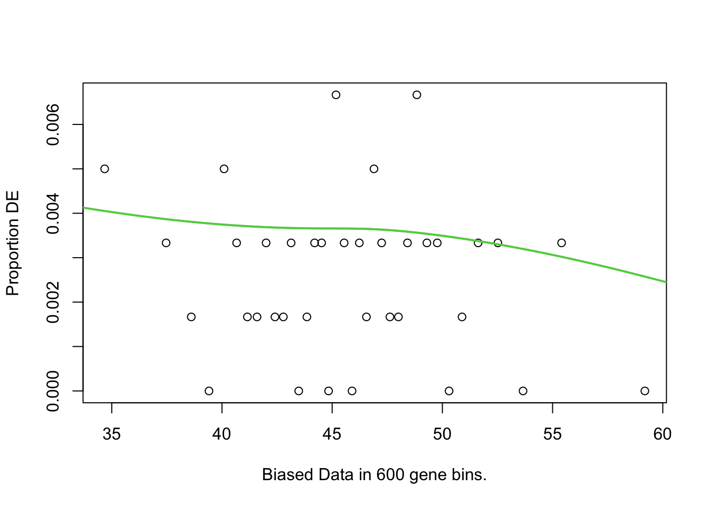
goseq_mpsiiib <- goseq(pwf, gene2cat = GO) %>%
as_tibble() %>%
dplyr::filter(numDEInCat > 0) %>%
mutate(FDR = p.adjust(over_represented_pvalue, method = "fdr")) %>%
dplyr::select(-under_represented_pvalue)
goseq_mpsiiib %>%
dplyr::slice(1:10) %>%
mutate(propDE = numDEInCat/numInCat) %>%
ggplot(aes(x = -log10(over_represented_pvalue), y = reorder(category, -over_represented_pvalue))) +
geom_col(aes(fill = propDE, alpha = FDR < 0.05)) +
scale_fill_viridis_c() +
scale_alpha_manual(values = c(0.4, 1)) +
labs(y = "GO Term",
fill = "Proportion of \nDE genes in \nGO term")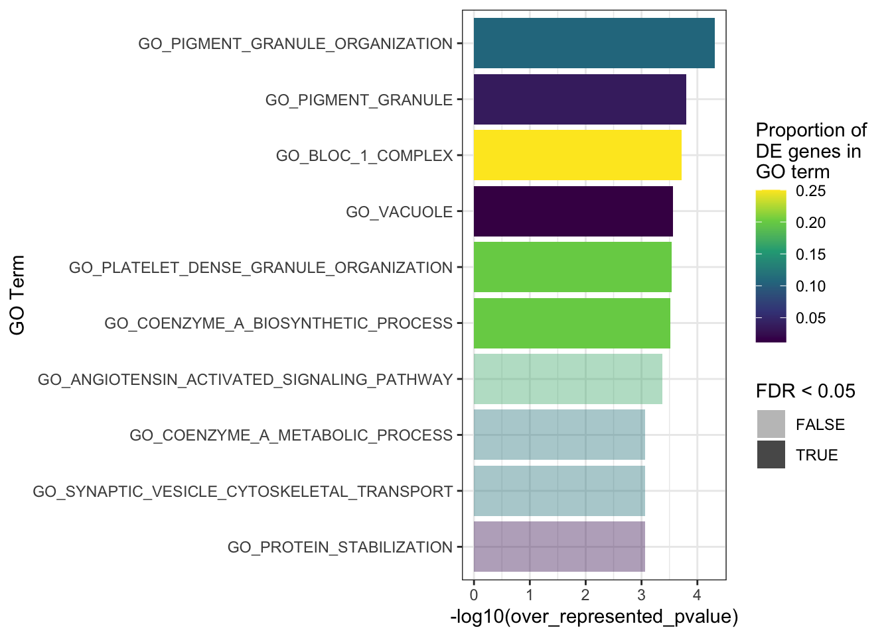
Overrepresenation analysis using goseq relies on a hard threshold for gene to be called DE. This can lose information as there are genes which are almost DE (i.e. FDRp = 0.06), but are not interpreted in this way.
Another method to test for enrichment of gene sets is to use ROAST. Roast uses a rotation-based approach to generate a null distribution of gene set enrichment scores by randomly permuting the samples or the gene labels in the data. Roast then calculates a gene set enrichment score for each gene set in the data, based on the correlation between the gene expression values and the sample labels. The gene set enrichment scores are compared to the null distribution to calculate the statistical significance of the enrichment. In this way, it does not requre a list of DEGs as input.
Here, I will perform the fast approx of ROAST: fry, frmo the limma package on the KEGG gene sets. The top 10 gene sets in each mutant zebrafish are shown below.
fryKEGG <-
design %>% colnames() %>% .[2:3] %>%
sapply(function(y) {
logCPM %>%
fry(
index = KEGG,
design = design,
contrast = y,
sort = "mixed"
) %>%
rownames_to_column("pathway") %>%
as_tibble() %>%
mutate(coef = y)
}, simplify = FALSE)
fryKEGG$MPSIIIB %>%
dplyr::slice(1:10) %>%
mutate(pathway = str_remove(pathway, pattern = "KEGG_")) %>%
ggplot(aes(x = -log10(PValue.Mixed), y = reorder(pathway, -PValue.Mixed))) +
geom_col(aes(fill = FDR.Mixed < 0.05)) +
scale_fill_manual(values = c("grey50", 'red')) +
theme_pubr() +
labs(fill = "FDR < 0.05",
x = "-log10(PValue)",
y = "",
title = "MPS-IIIB") 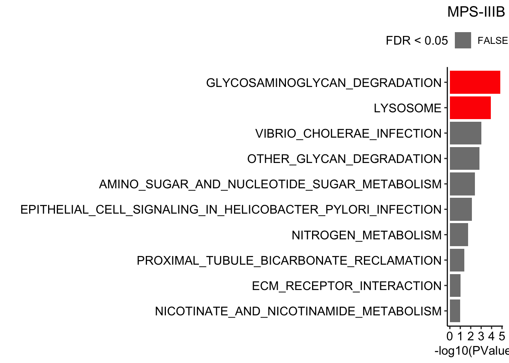
#theme(text = element_text(size = 40))
# ggsave("output/plots/geneSetsInMPS-IIIB.png", width = 10, height = 7,
# units = "cm", dpi = 300, scale= 5)
fryKEGG$EOfADlike %>%
dplyr::slice(1:10) %>%
mutate(pathway = str_remove(pathway, pattern = "KEGG_")) %>%
ggplot(aes(x = -log10(PValue.Mixed), y = reorder(pathway, -PValue.Mixed))) +
geom_col(aes(fill = FDR.Mixed < 0.05)) +
scale_fill_manual(values = c("grey50", 'red')) +
theme_pubr() +
labs(fill = "FDR < 0.05",
x = "-log10(PValue)",
y = "",
title = "EOfAD")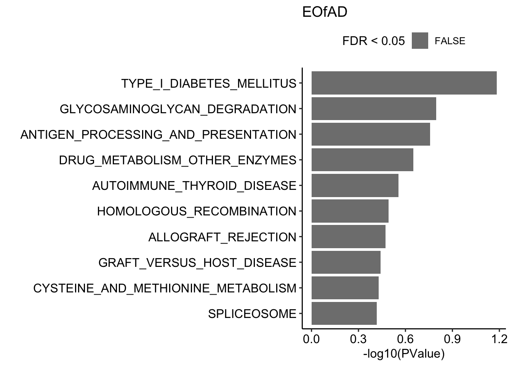
Gene ontologies.
fry_GO <- design %>% colnames() %>% .[2:3] %>%
sapply(function(y) {
logCPM %>%
fry(
index = GO,
design = design,
contrast = y,
sort = "mixed"
) %>%
rownames_to_column("pathway") %>%
as_tibble() %>%
mutate(coef = y,
sig = FDR.Mixed < 0.05)
}, simplify = FALSE)
sigGOs <- fry_GO %>%
bind_rows() %>%
dplyr::filter(sig == TRUE) %>%
.$pathway
fry_GO %>%
bind_rows() %>%
dplyr::filter(pathway %in% sigGOs) %>%
arrange(desc(coef), PValue.Mixed) %>%
mutate(order = rownames(.)) %>%
ggplot(aes(x = coef, y = pathway)) +
geom_tile(
aes(fill = -log10(PValue.Mixed))
) +
theme_pubr() +
scale_fill_viridis_c(option = "magma") +
labs(fill = "-log10(PValue)",
x = "",
y = "",
title = "MPS-IIIB")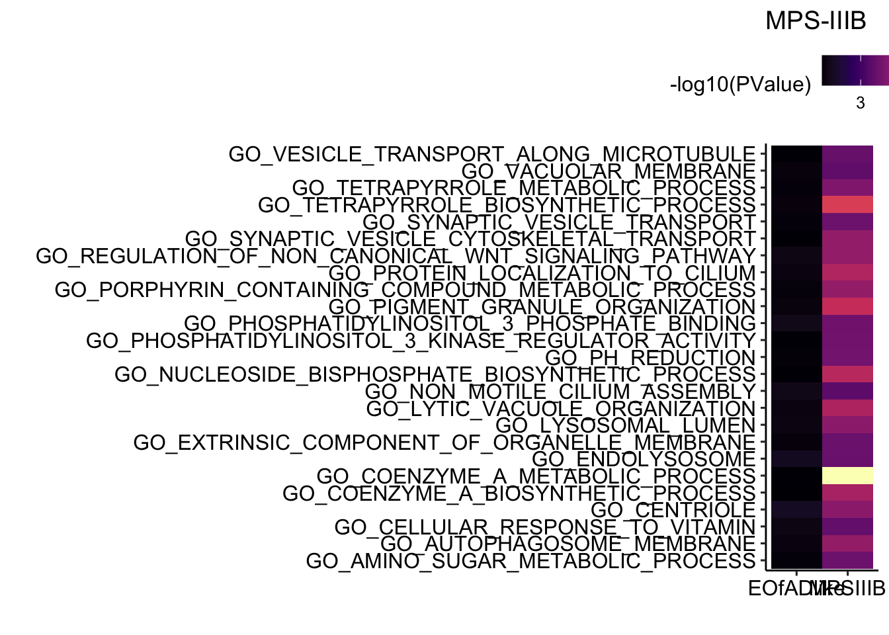
theme(text = element_text(size = 25)) List of 1
$ text:List of 11
..$ family : NULL
..$ face : NULL
..$ colour : NULL
..$ size : num 25
..$ hjust : NULL
..$ vjust : NULL
..$ angle : NULL
..$ lineheight : NULL
..$ margin : NULL
..$ debug : NULL
..$ inherit.blank: logi FALSE
..- attr(*, "class")= chr [1:2] "element_text" "element"
- attr(*, "class")= chr [1:2] "theme" "gg"
- attr(*, "complete")= logi FALSE
- attr(*, "validate")= logi TRUE # ggsave("output/plots/gotermsMPS-IIIB.png", width = 10, height = 7,
# units = "cm", dpi = 300, scale= 5)
fry_GO$EOfADlike %>%
dplyr::slice(1:32) %>%
ggplot(aes(x = -log10(PValue.Mixed), y = reorder(pathway, -PValue.Mixed))) +
geom_col(aes(fill = -log10(PValue.Mixed))) +
scale_fill_viridis_c() +
theme_pubr() +
labs(fill = "FDR < 0.05",
x = "-log10(PValue)",
y = "",
title = "MPS IIIB") 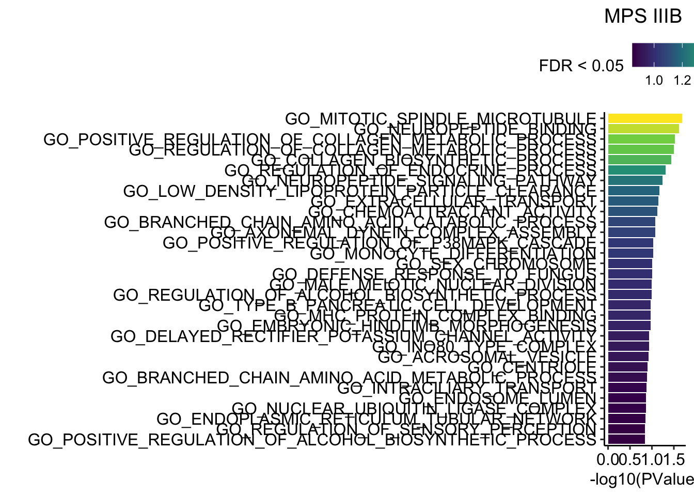
ggsave("output/plots/gotermsMPS-IIIB.png", width = 10, height = 5,
units = "cm", dpi = 300, scale= 4)Statistical significance in these iron-responsive element gene sets can indicate iron dyshomoestasis.
fryIRE <- design %>% colnames() %>% .[2:3] %>%
sapply(function(y) {
cpm(x$counts, log = TRUE) %>%
fry(
index = ireGenes,
design = design,
contrast = y,
sort = "directional"
) %>%
rownames_to_column("pathway") %>%
as_tibble() %>%
mutate(coef = y)
}, simplify = FALSE)
fryIRE %>%
bind_rows() %>%
dplyr::select(pathway, coef, pvalue = PValue.Mixed, FDR = FDR.Mixed) %>%
ggplot(aes(y = pathway, x = -log10(pvalue))) +
geom_col(aes(fill = coef),
position = "dodge") +
geom_vline(xintercept = -log10(0.05)) +
scale_fill_viridis_d(end = 0.75) +
theme_pubr()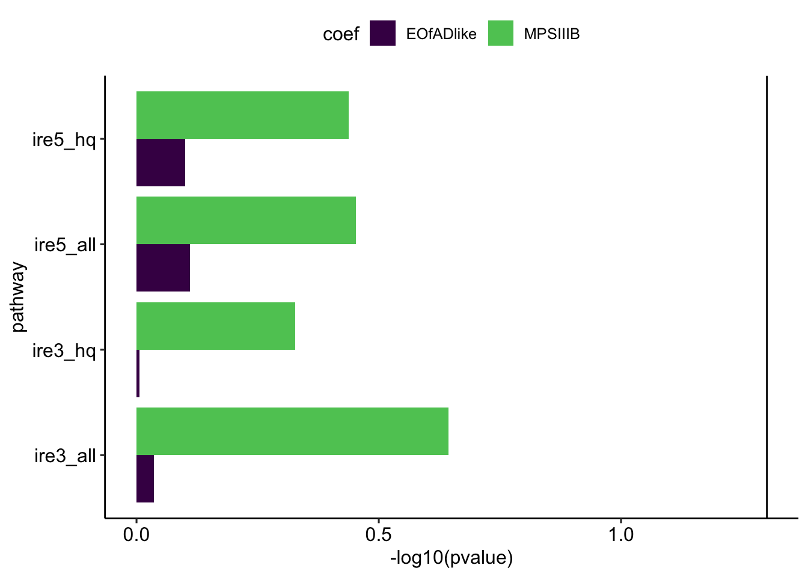
#ggsave("output/plots/ire.png", width = 10, height = 10, units = "cm", dpi = 300)Since this experiment was performed on whole larvae, we need to have a look at whether changes to cell type proportions could explain cause some artefactual changes to gene expression. We have done this previously by assessing the expression of marker genes of specific cell types. So this is what I will do here. I have taken the lists of genes frmo day 5 only from the zebrafish single cell atlas (Farnsworth et al. 2020) which contain at least 10 genes. This leaves 24 gene sets (cell types) to test.
fry.cell <- design %>% colnames() %>% .[2:3] %>%
sapply(function(y) {
cpm(x$counts, log = TRUE) %>%
fry(
index = cell_type_markers,
design = design,
contrast = y,
sort = "directional"
) %>%
rownames_to_column("pathway") %>%
as_tibble() %>%
mutate(coef = y) %>%
dplyr::select(1:5)
}, simplify = FALSE)Are there DEGs on the mutant chromosomes?
design %>% colnames() %>% .[2:3] %>%
sapply(function(y) {
cpm(x$counts, log = TRUE) %>%
fry(
index = c(chr),
design = design,
contrast = y,
sort = "mixed"
) %>%
rownames_to_column("pathway") %>%
as_tibble() %>%
mutate(coef = y)
}, simplify = FALSE)$MPSIIIB
# A tibble: 26 × 8
pathway NGenes Direction PValue FDR PValue.Mixed FDR.Mixed coef
<chr> <int> <chr> <dbl> <dbl> <dbl> <dbl> <chr>
1 24 615 Up 0.258 0.280 2.44e-10 0.00000000634 MPSIIIB
2 25 665 Up 0.0147 0.179 3.25e- 3 0.0423 MPSIIIB
3 8 939 Up 0.115 0.179 1.40e- 1 0.508 MPSIIIB
4 5 1219 Up 0.0729 0.179 1.75e- 1 0.508 MPSIIIB
5 17 819 Up 0.115 0.179 1.81e- 1 0.508 MPSIIIB
6 14 763 Up 0.122 0.179 1.94e- 1 0.508 MPSIIIB
7 3 1176 Up 0.166 0.188 2.12e- 1 0.508 MPSIIIB
8 15 825 Up 0.101 0.179 2.36e- 1 0.508 MPSIIIB
9 12 770 Up 0.160 0.188 2.36e- 1 0.508 MPSIIIB
10 11 734 Up 0.138 0.179 2.41e- 1 0.508 MPSIIIB
# ℹ 16 more rows
$EOfADlike
# A tibble: 26 × 8
pathway NGenes Direction PValue FDR PValue.Mixed FDR.Mixed coef
<chr> <int> <chr> <dbl> <dbl> <dbl> <dbl> <chr>
1 17 819 Up 0.781 0.846 0.226 0.986 EOfADlike
2 18 697 Up 0.557 0.752 0.473 0.986 EOfADlike
3 9 817 Up 0.474 0.752 0.513 0.986 EOfADlike
4 25 665 Up 0.237 0.752 0.548 0.986 EOfADlike
5 23 834 Up 0.613 0.752 0.643 0.986 EOfADlike
6 2 1055 Up 0.577 0.752 0.661 0.986 EOfADlike
7 3 1176 Up 0.631 0.752 0.696 0.986 EOfADlike
8 4 1084 Down 0.986 0.990 0.799 0.986 EOfADlike
9 8 939 Up 0.689 0.779 0.874 0.986 EOfADlike
10 14 763 Up 0.636 0.752 0.874 0.986 EOfADlike
# ℹ 16 more rowsSince I’m not detecting any significant gene sets in the EOfAD-like mutants, I need to try another method. I will use the harmonic mean p val method which combines indivisual p vals from 3 gene set enrichmen analysis methods: fry, camera and gsea.
# Make a custom function for calculating the HMP.
runHMP = function(gene.set.obj,
design,
logCPM.df,
toptable) {
fry <-
design %>% colnames() %>% .[2:3] %>%
sapply(function(y) {
logCPM.df %>%
fry(
index = gene.set.obj,
design = design,
contrast = y,
sort = "mixed"
) %>%
rownames_to_column("pathway") %>%
as_tibble() %>%
mutate(coef = y)
}, simplify = FALSE)
camera <-
design %>% colnames() %>% .[2:3] %>%
sapply(function(y) {
logCPM.df %>%
camera(
index = gene.set.obj,
design = design,
contrast = y
) %>%
rownames_to_column("pathway") %>%
as_tibble() %>%
mutate(coef = y)
}, simplify = FALSE)
ranks <-
sapply(toptable, function(y) {
y %>%
mutate(rankstat = sign(logFC) * log10(1/PValue)) %>%
arrange(rankstat) %>%
dplyr::select(c("gene_id", "rankstat")) %>% #only want the Pvalue with sign
with(structure(rankstat, names = gene_id)) %>%
rev() # reverse so the start of the list is upregulated genes
}, simplify = FALSE)
# Run fgsea
# set a seed for a reproducible result
set.seed(33)
fgsea <- ranks %>%
sapply(function(x){
fgseaMultilevel(stats = x, pathways = gene.set.obj) %>%
as_tibble() %>%
dplyr::rename(FDR = padj) %>%
mutate(padj = p.adjust(pval, "bonferroni")) %>%
dplyr::select(pathway, pval, FDR, padj, everything()) %>%
arrange(pval) %>%
mutate(sig = padj < 0.05)
}, simplify = F)
fgsea$MPSIIIB %<>%
mutate(coef = "MPSIIIB")
fgsea$EOfADlike %<>%
mutate(coef = "EOfADlike")
hmp <- fry %>%
bind_rows() %>%
dplyr::select(pathway, PValue.Mixed, coef) %>%
dplyr::rename(fry_p = PValue.Mixed) %>%
left_join(camera %>%
bind_rows() %>%
dplyr::select(pathway, PValue, coef),
by = c("pathway", "coef")) %>%
dplyr::rename(camera_p = PValue) %>%
left_join(fgsea %>%
bind_rows() %>%
dplyr::select(pathway, pval, coef),
by = c("pathway", "coef")) %>%
dplyr::rename(fgsea_p = pval) %>%
bind_rows() %>%
nest(p = one_of(c("fry_p", "camera_p", "fgsea_p"))) %>%
mutate(harmonic_p = vapply(p, function(x){
x <- unlist(x)
x <- x[!is.na(x)]
p.hmp(x, L = 4)
}, numeric(1))
) %>%
unnest() %>%
mutate(harmonic_p_FDR = p.adjust(harmonic_p, "fdr"),
sig = harmonic_p_FDR < 0.05) %>%
arrange(harmonic_p)
return(list(
hmp = hmp,
fgsea = fgsea
))
}HMP_kegg <- runHMP(gene.set.obj = KEGG,
design = design,
logCPM.df = logCPM,
toptable = toptables_cqn)
sigpaths <- HMP_kegg$hmp %>%
dplyr::filter(harmonic_p_FDR < 0.05) %>%
.$pathway
HMP_kegg$hmp %>%
dplyr::filter(pathway %in% sigpaths) %>%
ggplot(aes(x = coef, y = reorder(pathway, -harmonic_p))) +
geom_tile(aes(fill = -log10(harmonic_p),
alpha = sig)) +
geom_label(aes(label = signif(harmonic_p_FDR, digits = 2)),
fill = NA) +
scale_fill_viridis_c()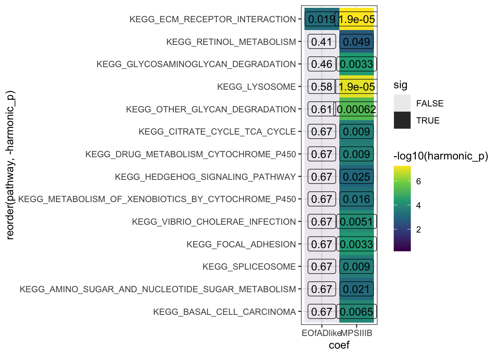
No staistical significance in the IRE genes
HMP_ire <- runHMP(gene.set.obj = ireGenes,
design = design,
logCPM.df = logCPM,
toptable = toptables_cqn)
HMP_ire$hmp %>%
ggplot(aes(x = coef, y = reorder(pathway, -harmonic_p))) +
geom_tile(aes(fill = -log10(harmonic_p),
alpha = sig)) +
geom_label(aes(label = signif(harmonic_p_FDR, digits = 2)),
fill = NA) +
scale_fill_viridis_c()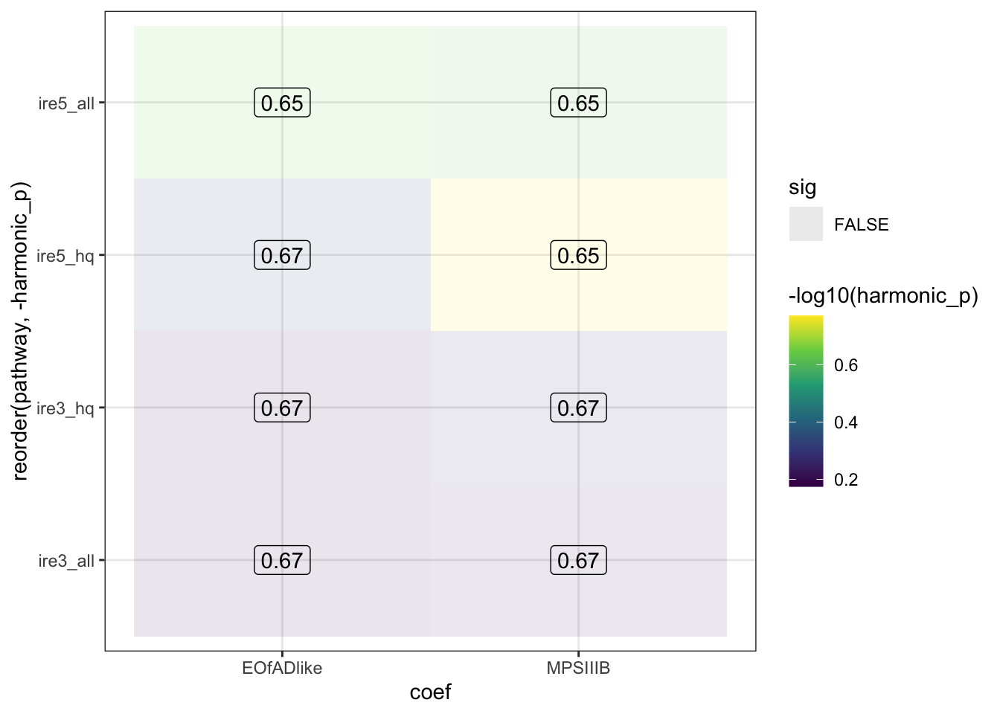
set.seed(2016)
mu <- x$counts %>%
as.data.frame() %>%
.[grepl(colnames(x$counts), pattern = "wt")] %>%
rowMeans()
disp <- x %>% estimateDisp() %>% . $tagwise.dispersion
fc <- function(y){exp(rnorm(y, log(1), 0.5*log(2)))}
power <- ssizeRNA_vary(nGenes = dim(x)[1], # Num detectable genes
pi0 = 0.9, # Proportion of non-DE genes
m = 30, # pseudo sample size
mu = mu, # Average read count for each gene in control group. Calculated from this current dataset)
disp = disp, # Dispersion parameter for each gene
fc = fc, # Fold change per gene
fdr = 0.05, # FDR level to control
#power = 0.7, # power level
maxN = 40,
replace = T
)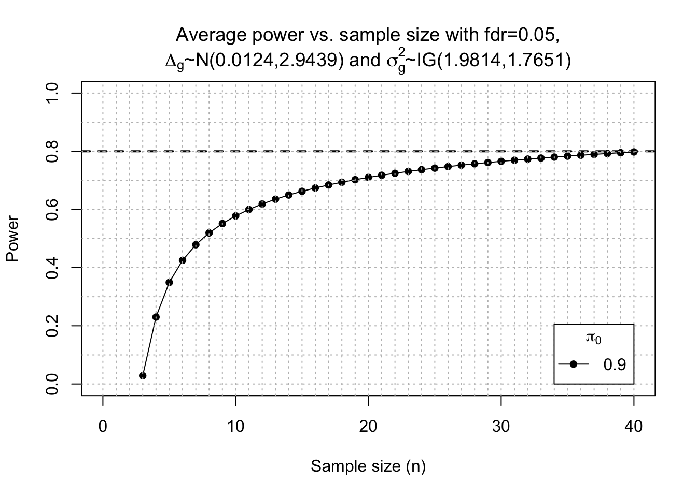
power$power %>%
set_colnames(c("n", "power")) %>%
ggplot(aes(x = n, y = power)) +
geom_point() +
geom_line() +
coord_cartesian(xlim = c(0,30)) +
geom_hline(yintercept = 0.7, linetype = 2, colour = "red") +
geom_hline(yintercept = 0.51, linetype = 2, colour = "blue") 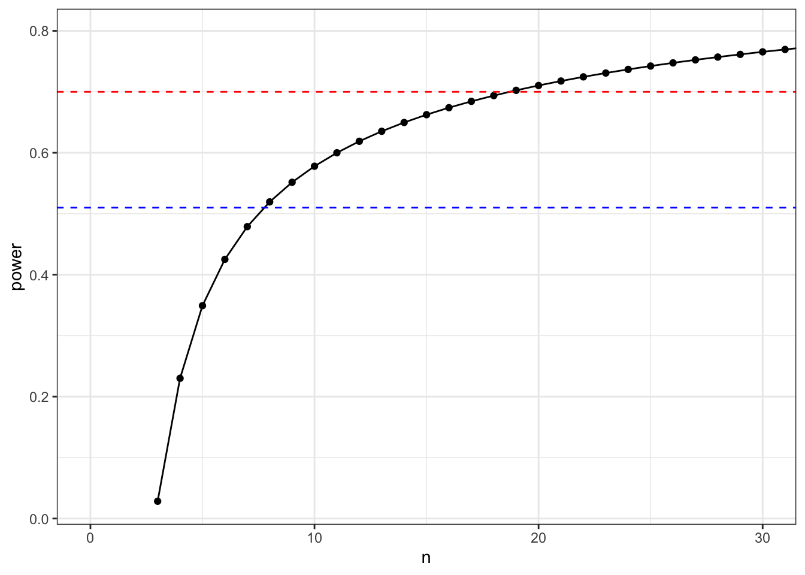
#ggsave("output/plots/posthocPowerLarvae.png", width = 10, height = 5, units = "cm",
# dpi = 200, scale = 1.5)Yang had previously analysed the EOfADlike mutation in pools of larvae. Here, I want to see how similar my results are.
Obtained his github repo from here, which has the data https://github.com/yangdongau/20190717_Lardelli_RNASeq_Larvae
Comparing his fc vales im not really seeing much. I wil re-process his data to do HMP analyses on it.
x.Dong <- read_rds("data/DongEtAlData/dgeList.rds")
x.Dong$samples %<>%
mutate(Genotype = case_when(
Genotype == "Q96K97del/+" ~ "EOfADlike",
Genotype == "WT" ~ "wt"
) %>%
factor(levels = c("wt", "EOfADlike")))
larvaeGenos <- x.Dong$samples %>%
dplyr::select(Genotype) %>%
mutate(exp = "pools") %>%
bind_rows(x$samples %>% dplyr::select(Genotype) %>% mutate(exp = "individual")) %>%
rownames_to_column("sample")
# PCA
cpm(x, log = T) %>%
as.data.frame() %>%
rownames_to_column("gene_id") %>%
left_join(x.Dong$counts %>% cpm(log=T) %>% as.data.frame %>% rownames_to_column("gene_id")) %>%
column_to_rownames("gene_id") %>%
dplyr::select(!starts_with("MPS")) %>%
na.omit %>%
t %>%
prcomp() %>%
autoplot(data = tibble(sample = rownames(.$x)) %>%
left_join(larvaeGenos),
colour = "Genotype",
size = 4
) +
geom_mark_ellipse(aes(labels = exp)) +
scale_color_discrete_qualitative(palette = "Dark 3") +
theme(aspect.ratio = 1) 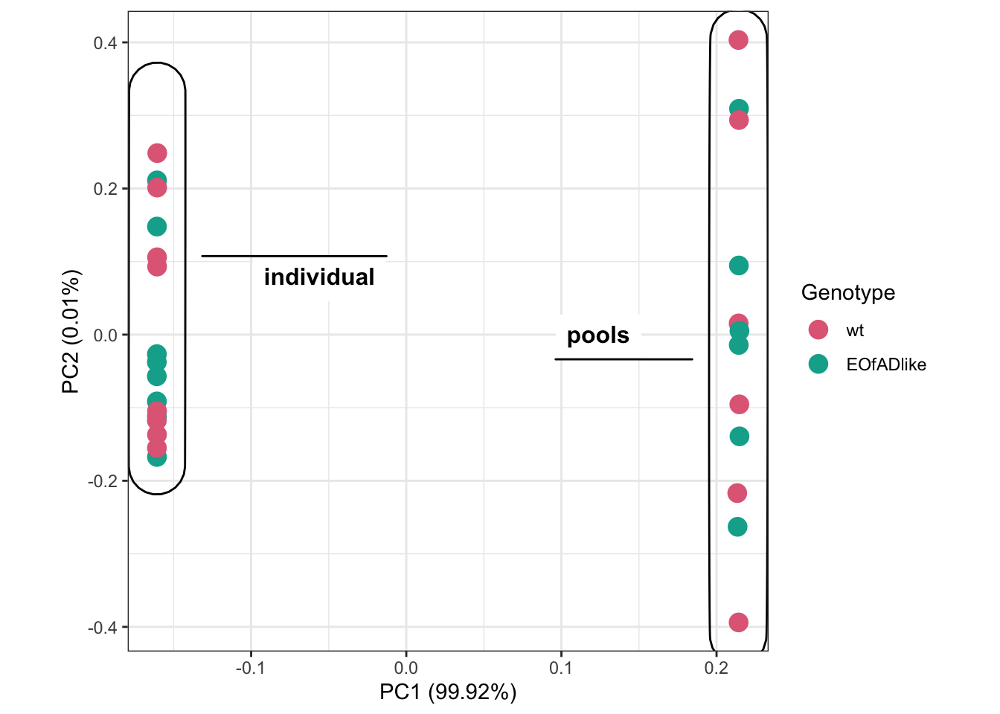
# suss out ECM
toptable_dongetal <-
read_csv("data/DongEtAlData/topTable.csv") %>%
dplyr::rename( gene_id = ensembl_gene_id,
gene_name = external_gene_name)
toptable_dongetal %>%
dplyr::filter(gene_id %in% KEGG$KEGG_ECM_RECEPTOR_INTERACTION) %>%
dplyr::select(gene_name, logFC.pools = logFC) %>%
left_join(toptables_cqn$EOfADlike %>% dplyr::select(gene_name, logFC.individuals = logFC)) %>%
dplyr::distinct(gene_name, .keep_all = T) %>%
column_to_rownames("gene_name") %>%
pheatmap(color = colorRampPalette(rev(brewer.pal(n = 5,
name = "RdBu")))(200),
breaks = seq(-0.6, 0.6, by = 0.6*2/200),
main ="KEGG_ECM_RECEPTOR_INTERACTION")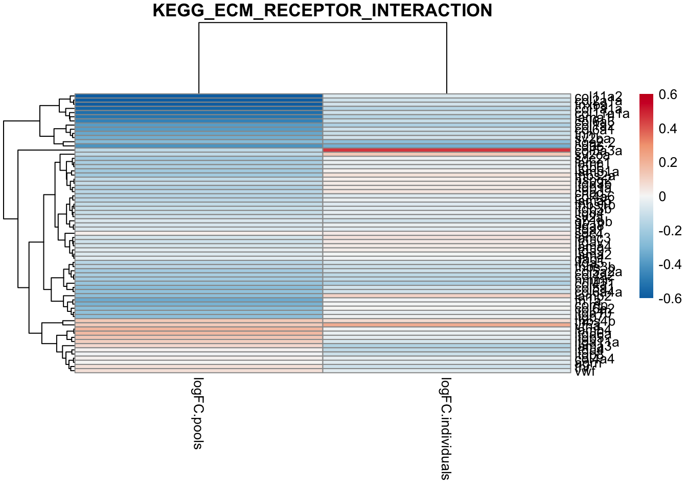
toptable_dongetal %>%
dplyr::filter(gene_id %in% KEGG$KEGG_ECM_RECEPTOR_INTERACTION) %>%
dplyr::select(gene_name, logFC.pools = logFC) %>%
left_join(toptables_cqn$EOfADlike %>% dplyr::select(gene_name, logFC.individuals = logFC)) %>%
dplyr::distinct(gene_name, .keep_all = T) %>%
column_to_rownames("gene_name") %>%
ggscatter(x = "logFC.individuals", y = "logFC.pools",
color = "black", shape = 21, size = 3, # Points color, shape and size
add = "reg.line", # Add regressin line
add.params = list(color = "blue", fill = "lightgray"), # Customize reg. line
conf.int = TRUE, # Add confidence interval
cor.coef = TRUE, # Add correlation coefficient. see ?stat_cor
#cor.coeff.args = list(method = "pearson", label.x = 3, label.sep = "\n")
) +
geom_abline(slope = 1) +
labs(title = "Pearson corr of genes in KEGG_ECM_RECEPTOR_INTERACTION")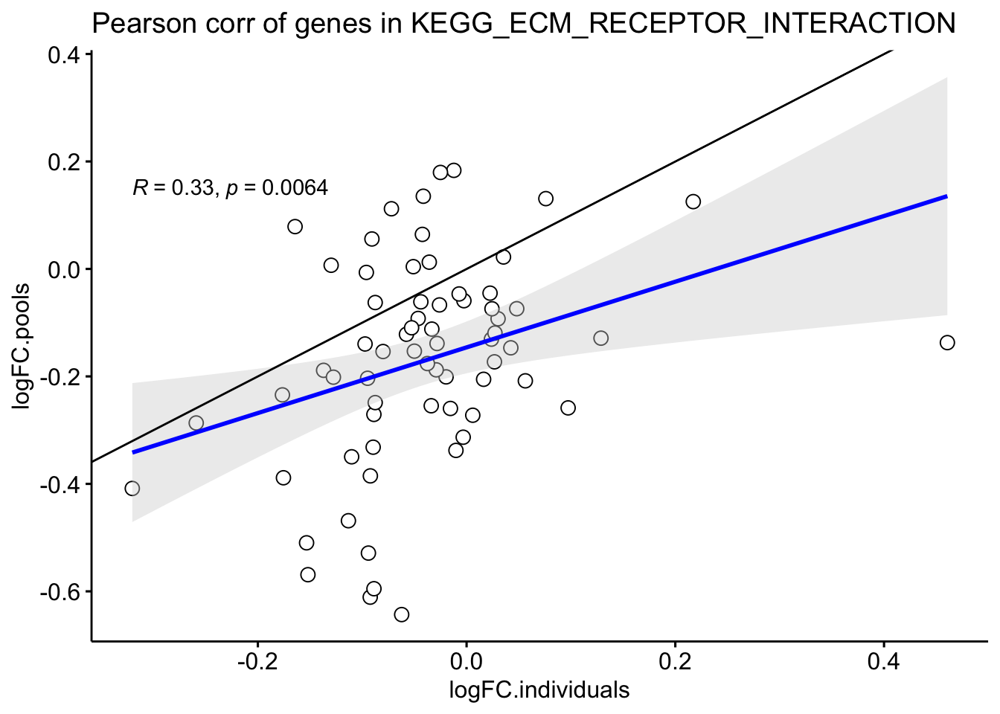
pwf.dong <- toptable_dongetal %>%
with(
nullp(
DEgenes = structure(DE, names = gene_id),
bias.data = aveLength
)
)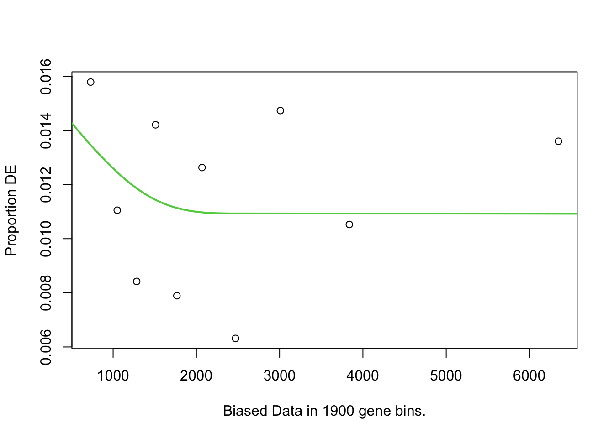
goseq_dong <- goseq(pwf.dong, gene2cat = GO) %>%
as_tibble() %>%
#dplyr::filter(numDEInCat > 0) %>%
mutate(FDR = p.adjust(over_represented_pvalue, method = "fdr")) %>%
dplyr::select(-under_represented_pvalue)
goseq_dong %>% dplyr::filter(category == "GO_PROTON_TRANSPORTING_V_TYPE_ATPASE_COMPLEX")# A tibble: 1 × 5
category over_represented_pva…¹ numDEInCat numInCat FDR
<chr> <dbl> <int> <int> <dbl>
1 GO_PROTON_TRANSPORTING_V_TYP… 1 0 25 1
# ℹ abbreviated name: ¹over_represented_pvaluegoseq_mpsiiib %>%
dplyr::slice(1:10) %>%
mutate(propDE = numDEInCat/numInCat) %>%
ggplot(aes(x = -log10(over_represented_pvalue), y = reorder(category, -over_represented_pvalue))) +
geom_col(aes(fill = propDE, alpha = FDR < 0.05)) +
scale_fill_viridis_c() +
scale_alpha_manual(values = c(0.4, 1)) +
labs(y = "GO Term",
fill = "Proportion of \nDE genes in \nGO term") design.dong <- model.matrix(~Genotype + W_1, x.Dong$samples) %>%
set_colnames(str_replace(colnames(.), pattern = "Genotype.+", "EOfAD-like"))
fry <-
cpm(x.Dong, log = T) %>%
fry(
index = KEGG,
design = design.dong,
contrast = "EOfAD-like",
sort = "mixed"
) %>%
rownames_to_column("pathway") %>%
as_tibble() %>%
mutate(coef = "EOfAD-like",
sig = FDR.Mixed < 0.05)
camera <-
cpm(x.Dong, log = T) %>%
camera(
index = KEGG,
design = design.dong,
contrast = "EOfAD-like"
) %>%
rownames_to_column("pathway") %>%
as_tibble() %>%
mutate(coef = "EOfAD-like")
ranks <-
toptable_dongetal %>%
mutate(rankstat = sign(logFC) * log10(1/PValue)) %>%
arrange(rankstat) %>%
dplyr::select(c("gene_id", "rankstat")) %>% #only want the Pvalue with sign
with(structure(rankstat, names = gene_id)) %>%
rev() # reverse so the start of the list is upregulated genes
# Run fgsea
# set a seed for a reproducible result
set.seed(33)
fgsea <- ranks %>%
fgseaMultilevel(pathways = KEGG) %>%
as_tibble() %>%
dplyr::rename(FDR = padj) %>%
mutate(padj = p.adjust(pval, "bonferroni")) %>%
dplyr::select(pathway, pval, FDR, padj, everything()) %>%
arrange(pval) %>%
mutate(sig = padj < 0.05,
coef ="EOfAD-like")
hmp.dong <- fry %>%
dplyr::select(pathway, PValue.Mixed, coef) %>%
dplyr::rename(fry_p = PValue.Mixed) %>%
left_join(camera %>%
dplyr::select(pathway, PValue, coef),
by = c("pathway", "coef")) %>%
dplyr::rename(camera_p = PValue) %>%
left_join(fgsea %>%
bind_rows() %>%
dplyr::select(pathway, pval, coef),
by = c("pathway", "coef")) %>%
dplyr::rename(fgsea_p = pval) %>%
bind_rows() %>%
nest(p = one_of(c("fry_p", "camera_p", "fgsea_p"))) %>%
mutate(harmonic_p = vapply(p, function(x){
x <- unlist(x)
x <- x[!is.na(x)]
p.hmp(x, L = 4)
}, numeric(1))
) %>%
unnest() %>%
mutate(harmonic_p_FDR = p.adjust(harmonic_p, "fdr"),
sig = harmonic_p_FDR < 0.05) %>%
arrange(harmonic_p)
hmp.kegg.q96 <- hmp.dong %>%
mutate(exp = "pools") %>%
bind_rows(HMP_kegg$hmp %>%
mutate(exp = "individuals")) %>%
dplyr::filter(coef == "EOfADlike")
sig.q96 <- hmp.kegg.q96 %>%
dplyr::filter(sig == T) %>%
.$pathway %>%
unique
hmp.dong %>%
dplyr::filter(pathway %in% sig.q96) %>%
ggplot(aes(x = -log10(harmonic_p), y = reorder(pathway, -harmonic_p))) +
geom_col(aes(fill = -log10(harmonic_p))) +
scale_fill_viridis_c() +
theme_classic() form <- ~ (1|Genotype) + (1|pair)
geneExpr <-
x.Dong$counts #%>%
# as.data.frame() %>%
# rownames_to_column("gene_id") %>%
# dplyr::filter(gene_id %in% KEGG$KEGG_ECM_RECEPTOR_INTERACTION) %>%
# column_to_rownames("gene_id")
#
n <- parallel::detectCores()/2 # experiment!
cl <- parallel::makeCluster(n)
doParallel::registerDoParallel(cl)
# this takes forever to run.
#varpar <- fitExtractVarPartModel(geneExpr, form, x.Dong$samples,
# BPPARAM=SnowParam(1)) # turn off parallel as my laptop sucks
#saveRDS(varpar, "data/dongvarpar.rds")
varpar <- readRDS("data/dongvarpar.rds")
varpar %>%
.[KEGG$KEGG_ECM_RECEPTOR_INTERACTION,] %>%
rownames_to_column("gene_id") %>%
na.omit %>%
arrange(Genotype) %>%
gather(key = "var", value = "prop", c(Genotype, pair, Residuals)) %>%
ggplot(aes(x = var, y = prop)) +
geom_violin() +
geom_boxplot(width = 0.1)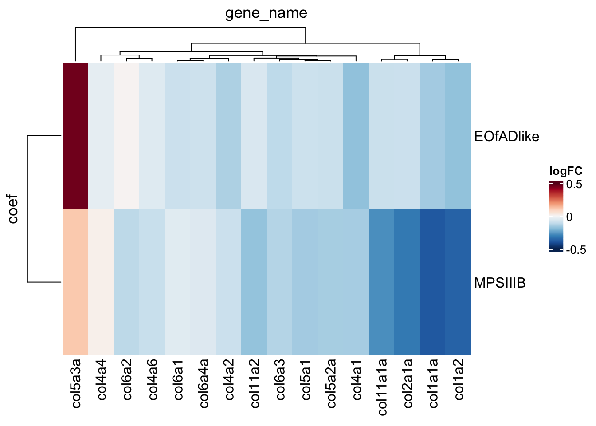 ## power calc Dong # Post-hoc power calc
set.seed(2016)
mu2 <-
x.Dong$counts %>%
as.data.frame() %>%
.[,(x.Dong$samples %>% dplyr::filter(Genotype == "wt") %>% .$sample)] %>%
rowMeans()
disp2 <- x.Dong %>% estimateDisp() %>% . $tagwise.dispersion
fc <- function(y){exp(rnorm(y, log(1), 0.5*log(1.5)))}
power2 <- ssizeRNA_vary(nGenes = dim(x.Dong)[1], # Num detectable genes
pi0 = 0.8, # Proportion of non-DE genes
m = 30, # pseudo sample size
mu = mu2, # Average read count for each gene in control group. Calculated from this current dataset)
disp = disp2, # Dispersion parameter for each gene
fc = fc, # Fold change per gene
fdr = 0.05, # FDR level to control
#power = 0.7, # power level
maxN = 40,
replace = T
)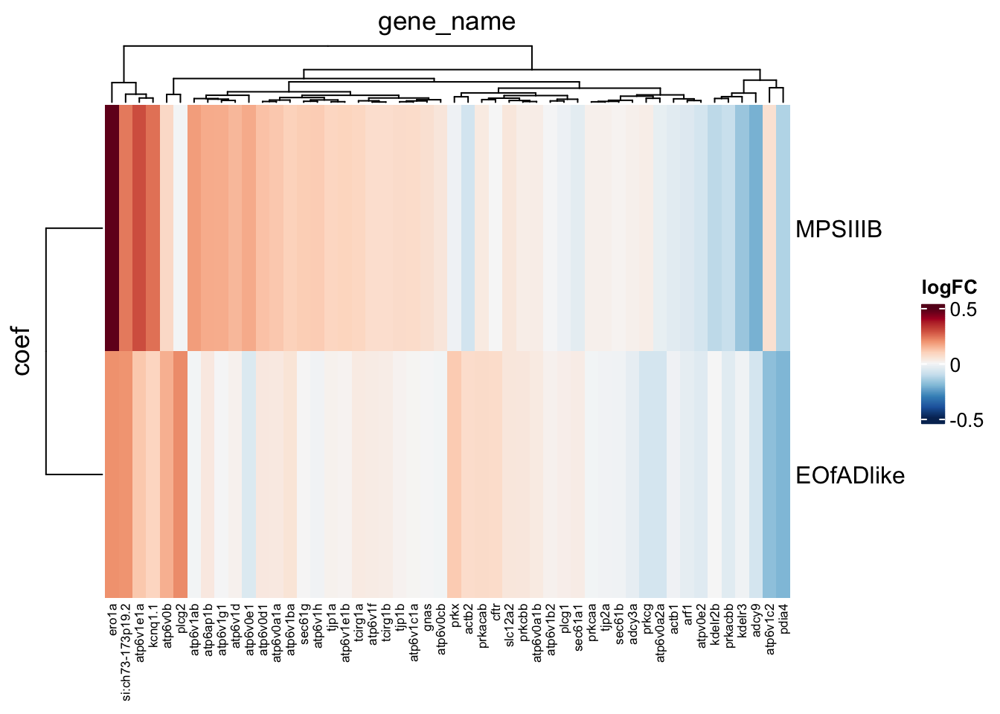
power2$power %>%
set_colnames(c("n", "power")) %>%
ggplot(aes(x = n, y = power)) +
geom_point() +
geom_line() +
coord_cartesian(xlim = c(0,30)) +
geom_vline(xintercept = 8)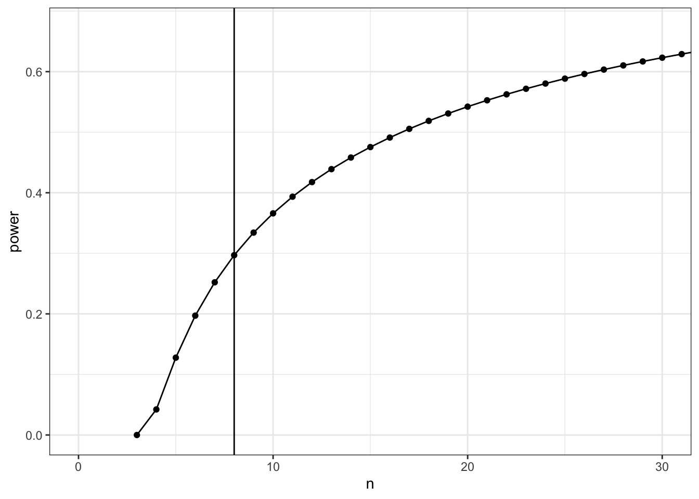
geom_hline(yintercept = 0.51, linetype = 2, colour = "blue") mapping: yintercept = ~yintercept
geom_hline: na.rm = FALSE
stat_identity: na.rm = FALSE
position_identity # ggsave("output/plots/posthocPowerLarvae.png", width = 10, height = 5, units = "cm",
# dpi = 200, scale = 1.5)x %>% saveRDS("data/R_objects/larvae/dge.rds")
logCPM %>% saveRDS("data/R_objects/larvae/logcpm.rds")
toptables_cqn %>% saveRDS("data/R_objects/larvae/toptablescqn.rds")
HMP_kegg %>% saveRDS("data/R_objects/larvae/hmp_kegg.rds")
HMP_ire %>% saveRDS("data/R_objects/larvae/hmp_ire.rds")
fry.cell %>% saveRDS("data/R_objects/larvae/celltype_larvae.rds")
#
# ire.output <- HMP_ire$hmp %>%
# left_join(HMP_ire$fgsea %>%
# bind_rows() %>%
# dplyr::select(pathway, coef, leadingEdge),
# by = c('pathway', 'coef')
# ) %>%
# split(f = .$coef) %>%
# lapply(dplyr::select, -coef) %>%
# set_names(
# names(.) %>%
# paste0("mRNA_ire_7dpf_", .)
# )
#
# KEGG.output <- HMP_kegg$hmp %>%
# left_join(HMP_kegg$fgsea %>%
# bind_rows() %>%
# dplyr::select(pathway, coef, leadingEdge),
# by = c('pathway', 'coef')
# ) %>%
# split(f = .$coef) %>%
# lapply(dplyr::select, -coef) %>%
# set_names(
# names(.) %>%
# paste0("mRNA_KEGG_7dpf_", .)
# )
#
# c(KEGG.output, ire.output) %>%
# write.xlsx("output/spreadsheets/RNAseqlarvae_hmpoutputs.xlsx")
#
# fry.cell %>%
# write.xlsx("output/spreadsheets/RNAseqlarvae_celltypeFry.xlsx")
sessionInfo()R version 4.3.2 (2023-10-31)
Platform: aarch64-apple-darwin20 (64-bit)
Running under: macOS Sonoma 14.3
Matrix products: default
BLAS: /Library/Frameworks/R.framework/Versions/4.3-arm64/Resources/lib/libRblas.0.dylib
LAPACK: /Library/Frameworks/R.framework/Versions/4.3-arm64/Resources/lib/libRlapack.dylib; LAPACK version 3.11.0
locale:
[1] en_US.UTF-8/en_US.UTF-8/en_US.UTF-8/C/en_US.UTF-8/en_US.UTF-8
time zone: Australia/Adelaide
tzcode source: internal
attached base packages:
[1] stats4 splines stats graphics grDevices utils datasets
[8] methods base
other attached packages:
[1] ensembldb_2.26.0 AnnotationFilter_1.26.0 GenomicFeatures_1.54.4
[4] AnnotationDbi_1.64.1 Biobase_2.62.0 GenomicRanges_1.54.1
[7] GenomeInfoDb_1.38.8 IRanges_2.36.0 S4Vectors_0.40.2
[10] variancePartition_1.32.5 BiocParallel_1.36.0 ssizeRNA_1.3.2
[13] harmonicmeanp_3.0.1 FMStable_0.1-4 cqn_1.48.0
[16] quantreg_5.97 SparseM_1.81 preprocessCore_1.64.0
[19] nor1mix_1.3-3 mclust_6.1 fgsea_1.28.0
[22] goseq_1.54.0 geneLenDataBase_1.38.0 BiasedUrn_2.0.11
[25] edgeR_4.0.16 limma_3.58.1 UpSetR_1.4.0
[28] colorspace_2.1-0 RColorBrewer_1.1-3 ggforce_0.4.2
[31] ggfortify_0.4.16 ggrepel_0.9.5 ggpubr_0.6.0
[34] pheatmap_1.0.12 scales_1.3.0 pander_0.6.5
[37] msigdbr_7.5.1 AnnotationHub_3.10.1 BiocFileCache_2.10.2
[40] dbplyr_2.5.0 ngsReports_2.4.0 patchwork_1.2.0
[43] BiocGenerics_0.48.1 readxl_1.4.3 magrittr_2.0.3
[46] lubridate_1.9.3 forcats_1.0.0 stringr_1.5.1
[49] dplyr_1.1.4 purrr_1.0.2 readr_2.1.5
[52] tidyr_1.3.1 tibble_3.2.1 ggplot2_3.5.0
[55] tidyverse_2.0.0 workflowr_1.7.1
loaded via a namespace (and not attached):
[1] ProtGenerics_1.34.0 fs_1.6.3
[3] matrixStats_1.3.0 bitops_1.0-7
[5] doParallel_1.0.17 httr_1.4.7
[7] numDeriv_2016.8-1.1 tools_4.3.2
[9] backports_1.4.1 utf8_1.2.4
[11] R6_2.5.1 DT_0.33
[13] lazyeval_0.2.2 mgcv_1.9-1
[15] withr_3.0.0 prettyunits_1.2.0
[17] gridExtra_2.3 textshaping_0.3.7
[19] cli_3.6.2 labeling_0.4.3
[21] sass_0.4.9 mvtnorm_1.2-4
[23] systemfonts_1.0.6 Rsamtools_2.18.0
[25] rstudioapi_0.16.0 RSQLite_2.3.6
[27] generics_0.1.3 BiocIO_1.12.0
[29] vroom_1.6.5 gtools_3.9.5
[31] car_3.1-2 GO.db_3.18.0
[33] Matrix_1.6-5 fansi_1.0.6
[35] abind_1.4-5 lifecycle_1.0.4
[37] whisker_0.4.1 yaml_2.3.8
[39] carData_3.0-5 SummarizedExperiment_1.32.0
[41] gplots_3.1.3.1 qvalue_2.34.0
[43] SparseArray_1.2.4 grid_4.3.2
[45] blob_1.2.4 promises_1.3.0
[47] crayon_1.5.2 lattice_0.22-6
[49] cowplot_1.1.3 KEGGREST_1.42.0
[51] pillar_1.9.0 knitr_1.45
[53] boot_1.3-30 rjson_0.2.21
[55] corpcor_1.6.10 codetools_0.2-20
[57] fastmatch_1.1-4 ssize.fdr_1.3
[59] glue_1.7.0 getPass_0.2-4
[61] data.table_1.15.4 vctrs_0.6.5
[63] png_0.1-8 Rdpack_2.6
[65] cellranger_1.1.0 gtable_0.3.4
[67] cachem_1.0.8 xfun_0.43
[69] rbibutils_2.2.16 S4Arrays_1.2.1
[71] mime_0.12 survival_3.5-8
[73] iterators_1.0.14 statmod_1.5.0
[75] interactiveDisplayBase_1.40.0 nlme_3.1-164
[77] pbkrtest_0.5.2 bit64_4.0.5
[79] EnvStats_2.8.1 progress_1.2.3
[81] filelock_1.0.3 rprojroot_2.0.4
[83] bslib_0.7.0 KernSmooth_2.23-22
[85] DBI_1.2.2 tidyselect_1.2.1
[87] processx_3.8.4 bit_4.0.5
[89] compiler_4.3.2 curl_5.2.1
[91] git2r_0.33.0 xml2_1.3.6
[93] ggdendro_0.2.0 DelayedArray_0.28.0
[95] plotly_4.10.4 rtracklayer_1.62.0
[97] caTools_1.18.2 remaCor_0.0.18
[99] callr_3.7.6 rappdirs_0.3.3
[101] digest_0.6.35 minqa_1.2.6
[103] rmarkdown_2.26 aod_1.3.3
[105] XVector_0.42.0 RhpcBLASctl_0.23-42
[107] htmltools_0.5.8.1 pkgconfig_2.0.3
[109] lme4_1.1-35.2 MatrixGenerics_1.14.0
[111] highr_0.10 fastmap_1.1.1
[113] rlang_1.1.3 htmlwidgets_1.6.4
[115] shiny_1.8.1.1 farver_2.1.1
[117] jquerylib_0.1.4 zoo_1.8-12
[119] jsonlite_1.8.8 RCurl_1.98-1.14
[121] GenomeInfoDbData_1.2.11 munsell_0.5.1
[123] Rcpp_1.0.12 babelgene_22.9
[125] stringi_1.8.3 zlibbioc_1.48.2
[127] MASS_7.3-60.0.1 plyr_1.8.9
[129] parallel_4.3.2 Biostrings_2.70.3
[131] hms_1.1.3 locfit_1.5-9.9
[133] ps_1.7.6 ggsignif_0.6.4
[135] reshape2_1.4.4 biomaRt_2.58.2
[137] BiocVersion_3.18.1 XML_3.99-0.16.1
[139] evaluate_0.23 BiocManager_1.30.22
[141] foreach_1.5.2 nloptr_2.0.3
[143] tzdb_0.4.0 tweenr_2.0.3
[145] httpuv_1.6.15 MatrixModels_0.5-3
[147] polyclip_1.10-6 broom_1.0.5
[149] xtable_1.8-4 restfulr_0.0.15
[151] fANCOVA_0.6-1 rstatix_0.7.2
[153] later_1.3.2 ragg_1.3.0
[155] viridisLite_0.4.2 lmerTest_3.1-3
[157] memoise_2.0.1 GenomicAlignments_1.38.2
[159] timechange_0.3.0